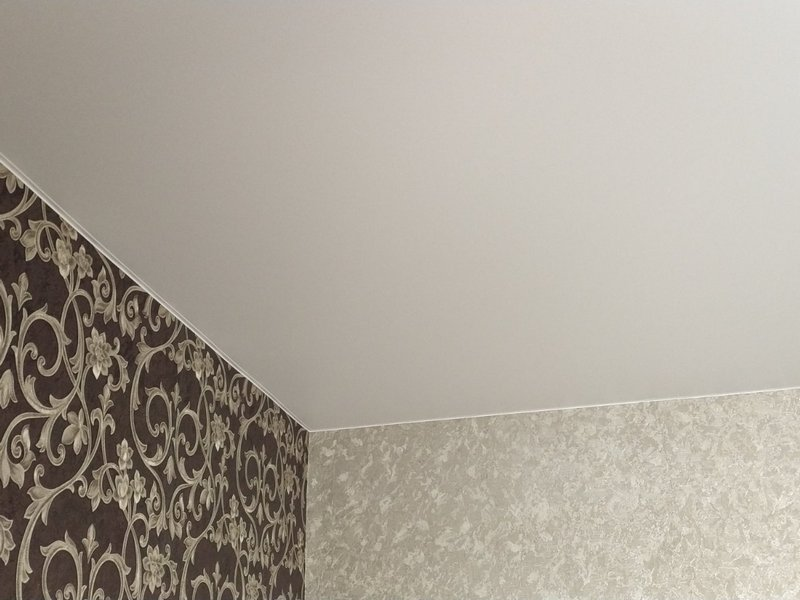

Сатиновые натяжные потолки в Киеве

Мат и глянец – словно, два противоположных полюса в мире популярных потолочных покрытий. Но как же быть тем, кто ищет золотую средину, и есть ли таковая? Однозначно есть и имя ей – сатиновые натяжные потолки.
Но предположение, что они выполнены из сатина ошибочно. Ткань абсолютно непригодна для монтажных работ такого плана, поэтому с нею у потолочного покрытия общее только похожее переплетение нитей основы, то есть структура.
Но именно фактура ткани и определяет основные положительные качества сатинового потолка, присущие только ему. Об этом подробнее.
Характерные особенности сатинового потолка
Как вы уже поняли, что сатин с натяжным потолком не имеет ничего общего. Потолок выполняется из тех же материалов, что и его собратья, то есть из поливинилхлоридной ленты. Из за схожего расположения нитей, такой потолок сохраняет блеск, но не отражает свет. По этой причине он больше похож на матовый внешне, но без зернистости фактуры. Таким образом, его и не спутаешь с окрашенной поверхностью (как это бывает с матовыми).
Из этих особенностей можно выделить отличительные достоинства сатинового потолка:
- он такой же доступен по цене, как и матовый вариант покрытия;
- сатин – золотая средина и в критерии трудоемкости по уходу: с ним сложнее обращаться, чем с матовым, но гораздо проще, нежели с глянцем;
- такой потолок подарит уют и спокойствие, но одновременно с этим принесет нотку торжественности в помещение;
- вид настоящей ткани смотрится богато и роскошно;
- благодаря своей фактуре, создается причудливая игра света и под разными углами обзора потолок выглядит разнообразно с утонченными бликами и перламутровым отливом.
Из вышеперечисленных особенностей вытекает еще одна черта, характерная исключительно данному виду потолочной отделки.

Эффект перламутра
Как уже стало понятно, сатиновые потолки – не просто красиво, а невероятно красиво. Под разным освещением, ваш потолок будет играть разнообразными тонами: от светлых бликов при дневном свете и до глубоких темных нот от искусственных ламп. В этом и заключается суть перламутрового эффекта.
Этим свойством он еще раз закрепляет за собой гордое название «середины». С одной стороны, сатиновый потолок значительно светлее матового коллеги, а с другой не создает эффекта зеркала, как глянец. При этом еще и интересно бликует. Консервативный стиль дизайна ничто так не подчеркнет лучше. Но и это далеко не все, на что способен данный вид покрытия.
Преимущества натяжного сатинового потолка
Сатиновому покрытию просто нет равных во многих показателях:
- Просто невероятная влагоустойчивость. Такой материал способен в прямом смысле спасти вашу мебель и бытовую технику в случае затопления, поскольку он выдерживает 100 килограмм на метр квадратный. Если все-таки случился потоп – просто откачайте воду через незаметное отверстие и следов как не бывало. Эта устойчивость распространяется и на наружную сторону. Так что никакой конденсат сатину не страшен. Идеально для ванных и кухонь.
- Сохранность тепла. Как известно, потолок, в отличие от стен, не утепляют. Если учесть то, что нагретый воздух поднимается вверх, то такое покрытие можно считать надежным утеплителем, поскольку оно способно сохранить до 60 % тепла. Ко всему прочему. Сатин удерживает до 90% звуков, доносящихся с верхних этажей.
- Практичность. Пропылесосили, протерли влажной тряпкой – и ваш потолок снова, как только после установки.
- Долговечность. В отличие от краски и обоев, которые нужно периодически освежать, такая отделка потолка прослужит ни одно десятилетие и при этом не утратит привлекательности внешнего вида.
- Экологичность. В силу гладкой поверхности сатина, на ней просто нет возможности завестись грибкам, плесени и тому подобных микроорганизмах. К тому же, простота ухода вообще снимает все проблемы с этим. Незаменимо для кухни.
- Минимальные потери высоты. Вы сэкономите до 6 см, по сравнению с подвесными конструкциями, что весьма ощутимо для наших многоэтажек.
- Простота монтажа. Установка такого потолка займет не более 4-х часов. При этом никакой пыли и прочего строительного мусора вам не придется после этого убирать.
- Гибкость материала. Вы никогда не создадите ничего подобного с подвесными потолками. Сатин способен на настоящие чудеса. На основе его эластичности можно создать удивительные выпуклые или вогнутые линии, эффектно выгнуть под осветительный прибор.
- Осветляет темные комнаты.
- Универсальность. Сатиновый потолок по светоотражению занимает промежуточное положение между глянцем и матом, что делает его пригодным к использованию в помещениях любого назначения. Он одинаково великолепен в офисе и в спальне, на кухне и в детской комнате. Что немаловажно, что сатин прекрасно вписывается даже в комнаты с большой площадью, чего не скажешь о глянцевых потолках, например. Уместно будет применить декор на таком потолке или выполнить фотопечать.
- Доступность. Конечно, если сравнивать с обоями и краской, то сатин, несомненно, дороже. Но тут все решает красота и долговечность – с этим ничто не сопоставимо.
Какой сатиновый потолок купить?
Современный рынок очень богат на предложения по поводу натяжных потолков. Но уже долгие годы неоспоримым лидером остается продукция французских мастеров. В частности, фирма BARRISOL держит первенство с 1976 года. Но ей не уступают и DRAKA, ALKOR, CTN. Цены на их товары находятся в пределах 200 грн. за квадратный метр.
Немецкие потолки от Descor обойдутся на 10-15 % дешевле, но их качество немного уступает Франции.
Итальянские предложения замыкают тройку лидеров. Однако если рассматривать цветовые решения, то продукции Malpensa практически нет равных. Так что все довольно условно.
Таким образом, для людей, которые ценят стабильную классику в сочетании с нотками современности, сатиновый натяжной потолок станет идеальным вариантом оформления верха комнаты. В вашем интерьере предусмотрены нотки пышного барокко или величественного викторианского стиля – тогда закажите для себя декор в виде фрески или репродукции известных полотен.
А если воспользоваться услугами толкового дизайнера, то в его руках покрытие способно полностью раскрыть все свои прекрасные черты. Удачно спроектируйте освещение и наслаждайтесь комфортом. Нужен спокойный матовый потолок? Просто выключите центральный источник света, оставьте точечные лампочки. При дневном свете вы получите праздничный и фееричный глянец.
Сатиновые потолки чаруют своей невесомостью и воздушностью. Блеск водной глади просто дышит своей природностью. Оригинальные и интересные, они однозначно зададут правильный тон для всего оформления комнаты. Не зря сатин является одним из фаворитов среди тканей у французских модельеров. Все лучшие достоинства этого материала переняли одноименные натяжные потолки.
Использование сатиновых натяжных потолков в интерьере
Благодаря своей благородной текстуре сатиновый натяжной потолок практически не имеет ограничений в использовании. Если матовое полотно слишком напоминает традиционную поверхность с обычной обработкой, а глянцевое может быть слишком блестящим и праздничным, то сатиновый впишется в любой интерьер, подойдет для гостиной спальни, детской, а также может с легкостью использоваться в офисе или развлекательном заведении.
Легкое свечение, перламутровый эффект, огромный выбор цветов – это широкое поле для работы фантазии дизайнера. Даже в обычную комнату установка таких потолков привнесет шик и благородство. Это лучший способ быстро и недорого преобразить интерьер в доме:
- Гостиная – в этой комнате можно использовать и матовые и глянцевые потолки. Но первые слишком обычно выглядят, а вторые слишком броские. Поэтому золотая середина будет оптимальным решением и для проведения вечеринок, и для тихих семейных вечеров.
- Детская – комната ребенка – это его маленький мир, сделать его достаточно яркими, но одновременно не возбуждающим можно сделать с помощью печати рисунка на натяжном потолке с сатиновым полотном.
- Кухня – за сатиновой поверхностью легче ухаживать, чем за глянцевой, но выглядит она не хуже, а порой даже лучше блестящей текстуры.
- Офисные помещения – идеальное решение там, где нужно соблюсти строгость делового стиля, но хочется привнести нотку современного дизайна.
На сатиновом потолке очень хорошо смотрится печать, он идеально сочетается с любой подсветкой, эффектом, вписывается в конструкции с несколькими уровнями.
Уход за сатиновым потолком
Такая текстура не собирает пыль, как матовая поверхность, и на ней не так видны разводы, как на глянце. Поэтому сатиновый потолок достаточно раз в месяц протереть влажной тряпкой или мягкой губкой.
Сильные загрязнения с перламутровой поверхности лучше выводить с помощью специальных средств. Это не повредит само полотно, и сохранит его магическое мерцание надолго.
Сегодня сатиновые потолки не уступают по популярности другим видам, хотя несколько лет назад на эту текстуру спрос был невелик. Поэтому если вы хотите оформить стильный и изысканный интерьер, обязательно обратите внимание на сатиновое полотно и свяжитесь с дизайнерами компании Nova Stelya.
Частые вопросы и ответы
🤗 Отражается ли в сатиновом потолке обстановка комнаты?
Нет, не отражается. Для многих именно сильный отражающий эффект глянца становится препятствием к его использованию. В этом случае обязательно обратите внимание на сатиновые натяжные потолки.
🤗 Сатиновое полотно дороже матового или глянцевого?
Даже в компаниях, где матовые и глянцевые полотна разные по цене, сатин не стоит дороже глянца. При этом в некоторых интерьерах его использование более оправдано.
🤗 Бывает ли тканевое полотно с сатиновой текстурой?
Нет. Все тканевые полотна имеют матовую текстуру. Не так давно появились некоторые полотна из другого материала, которые по текстуре и характеристикам похожи на глянец или сатин. Но они пока неоправданно дорогие и не пока не слишком популярны в нашей стране.
🤗 Можно ли использовать сатиновый натяжной потолок в больших помещениях?
Можно, некоторые производители предлагают полотно шириной до 5 метров, поэтому размер помещения для сатинового полотна перестал быть проблемой. Кроме того, на сатиновом потолке стыки и сварочные швы, почти незаметны.
🤗 Как выбрать производителя натяжного сатинового полотна?
В производстве полотен для натяжных потолков лидерами уже много десятилетий являются французские компании, поэтому их продукция считается самой качественной, но и дорогой. Сегодня на рынок выходят надежные изготовители из Китая, которые получили европейские сертификаты качества.